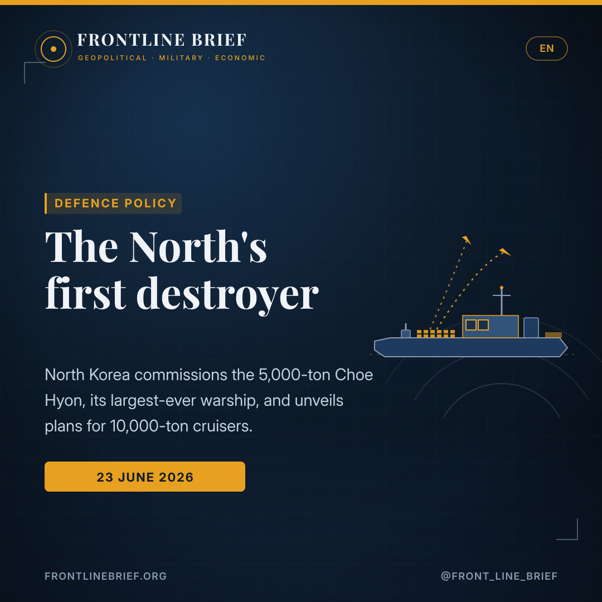
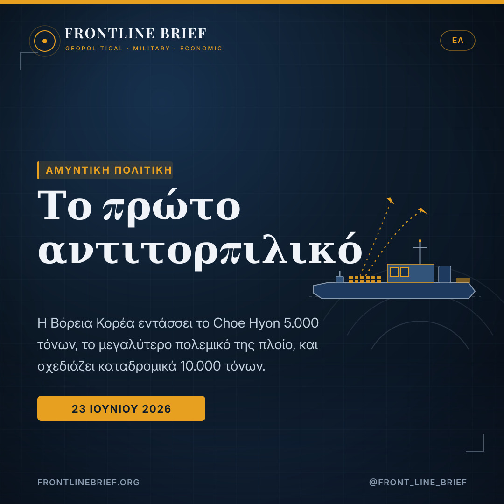
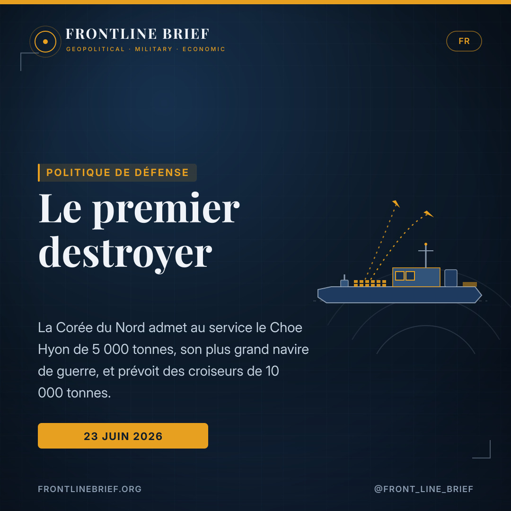
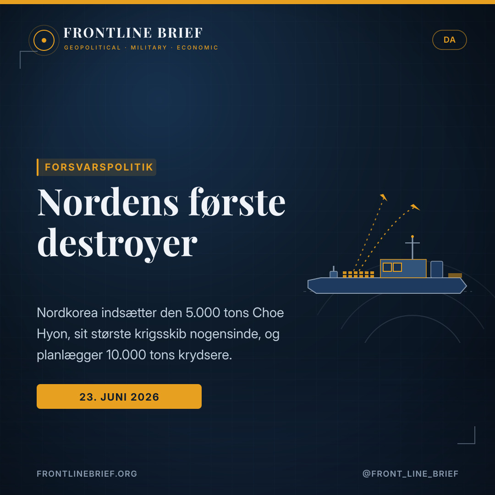
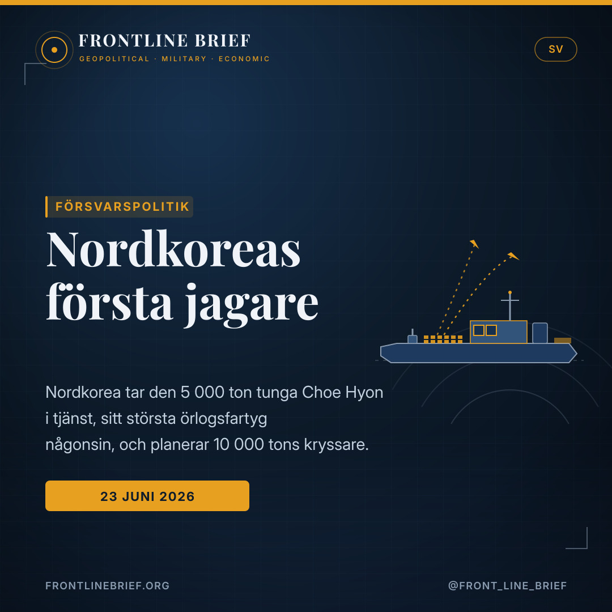

The North's first destroyer: Pyongyang commissions its largest-ever warship, and eyes cruisers
North Korea has commissioned the 5,000-ton Choe Hyon, the lead ship of a new class of guided-missile destroyers and the country's first ocean-going warship. Kim Jong Un called it a "new chapter" — and used the ceremony to unveil plans for 10,000-ton cruisers, a signal that Pyongyang is reaching beyond coastal defence toward a blue-water fleet.





A first for the fleet
Commissioned at Nampo on 23 June, the 145-metre, 5,000-ton Choe Hyon is North Korea's largest-ever warship and its first ocean-going combatant — the lead of four planned destroyers, assigned to the West Sea Fleet after 14 months of trials.
Up to ~104 missiles
Analysts count 88 vertical-launch cells (64 aft of four types, 24 forward), eight inclined launchers, a Pantsir-M-type close-in system, a 127mm gun, Type 730-style guns, torpedoes and a new anti-submarine launcher — up to roughly 104 missiles in all.
Cruisers next
Kim said the second ship, Kang Kon, will follow soon, and unveiled plans for 10,000-ton "strategic" cruisers — a label Pyongyang ties to nuclear-capable systems — with a stated goal of two major warships a year.
A "new chapter" at Nampo
North Korea has put to sea the most capable warship it has ever built. On 23 June, at the Nampo shipyard on the country's western coast, leader Kim Jong Un presided over the commissioning of the Choe Hyon (51), the lead vessel of a new class of 5,000-ton guided-missile destroyers, according to state news agency KCNA. Kim called the moment a "new chapter" in the country's military history; the navy, long the weakest of the armed services, framed it as the end of more than seventy years of stagnation.
From delivery to service
The ship's path to commissioning was unusually public. First revealed in imagery in December 2024 and shown off at a high-profile ceremony in April 2025, the vessel now appears to have been merely delivered then, not yet operational. Over the following fourteen months it went through sea trials, systems testing and combat-systems integration — several stages personally overseen by Kim — with repeated modifications to its weapons and sensors before reaching its final configuration and formally entering service in June 2026. It is the first ocean-going ship in North Korean service and will sail with the West Sea Fleet.
What she carries
The armament is what draws the eye. By analysts' count the destroyer carries 88 vertical-launch cells — 64 in the aft bank across four different types, plus 24 forward of the superstructure — alongside eight inclined launchers hidden in the central superstructure, giving a potential load of up to around 104 missiles. Rounding out the fit are a 127mm gun at the bow, two six-barrelled 30mm guns resembling the Chinese Type 730, a Pantsir-M-type air-defence system aft, twin torpedo tubes, decoy launchers, and a newly added twelve-tube launcher on each side believed to be for anti-submarine defence.
A navy the North once called its weakest branch now has its first ocean-going warship — and plans for cruisers twice its size.
Sensors and the shift to blue water
Beyond the weapons, the Choe Hyon marks a technological jump. The class carries a comprehensive electronic-warfare suite and four fixed-face phased-array radar panels — the arrangement of a modern air-defence combatant, and a first for the Korean People's Navy. Together with the ship's range, it points to a force being reshaped from coastal defence toward operations further out to sea. Much of the fit echoes Russian and Chinese designs, a reminder of where Pyongyang's naval technology base now draws from.
Cruisers, and why others are watching
Kim used the ceremony to look ahead. He said the second destroyer, Kang Kon (52), would enter service soon, and announced plans for a class of 10,000-ton surface combatants — cruisers with twice the destroyer's displacement, which Pyongyang is expected to designate "strategic," a term it has previously attached to nuclear-capable systems. The stated ambition is a tempo of two major warships a year. For Western navies the details matter less than the trajectory: a state under heavy sanctions, drawing on Russian and Chinese technology, is building bigger, better-armed ships and openly reaching for blue-water reach and power projection.
Ένα «νέο κεφάλαιο» στο Ναμπό
Η Βόρεια Κορέα έριξε στη θάλασσα το πιο ικανό πολεμικό πλοίο που έχει φτιάξει ποτέ. Στις 23 Ιουνίου, στο ναυπηγείο του Ναμπό στη δυτική ακτή της χώρας, ο ηγέτης Κιμ Γιονγκ Ουν προήδρευσε στην ένταξη σε υπηρεσία του Choe Hyon (51), του πρώτου πλοίου μιας νέας κλάσης αντιτορπιλικών κατευθυνόμενων βλημάτων 5.000 τόνων, σύμφωνα με το κρατικό πρακτορείο KCNA. Ο Κιμ χαρακτήρισε τη στιγμή «νέο κεφάλαιο» στη στρατιωτική ιστορία της χώρας· το ναυτικό, επί χρόνια ο ασθενέστερος κλάδος, το παρουσίασε ως το τέλος επτά και πλέον δεκαετιών στασιμότητας.
Από την παράδοση στην υπηρεσία
Η πορεία του πλοίου προς την ένταξη ήταν ασυνήθιστα δημόσια. Εμφανίστηκε πρώτη φορά σε εικόνες τον Δεκέμβριο του 2024 και επιδείχθηκε σε τελετή υψηλού προφίλ τον Απρίλιο του 2025, όμως τότε φαίνεται ότι απλώς παραδόθηκε, χωρίς να είναι ακόμη επιχειρησιακό. Στους επόμενους δεκατέσσερις μήνες πέρασε δοκιμές θαλάσσης, έλεγχο συστημάτων και ενσωμάτωση μαχητικών συστημάτων — αρκετά στάδια υπό την προσωπική επίβλεψη του Κιμ — με επανειλημμένες τροποποιήσεις σε όπλα και αισθητήρες προτού φτάσει στην τελική διαμόρφωσή του και ενταχθεί επίσημα σε υπηρεσία τον Ιούνιο του 2026. Είναι το πρώτο ποντοπόρο πλοίο στην υπηρεσία της Βόρειας Κορέας και θα υπηρετεί στον Στόλο της Δυτικής Θάλασσας.
Τι φέρει
Ο οπλισμός τραβά το βλέμμα. Κατά τους αναλυτές, το αντιτορπιλικό φέρει 88 κάθετες κυψέλες εκτόξευσης — 64 στην πρυμναία συστοιχία τεσσάρων διαφορετικών τύπων, συν 24 μπροστά από την υπερκατασκευή — μαζί με οκτώ κεκλιμένους εκτοξευτές κρυμμένους στην κεντρική υπερκατασκευή, δίνοντας δυνητικό φορτίο έως περίπου 104 πυραύλων. Συμπληρώνουν τη διάταξη ένα πυροβόλο 127 χιλιοστών στην πλώρη, δύο εξάκανα πυροβόλα 30 χιλιοστών τύπου κινεζικού Type 730, ένα σύστημα αεράμυνας τύπου Pantsir-M στην πρύμνη, δίδυμοι τορπιλοσωλήνες, εκτοξευτές δολωμάτων, και ένας νέος δωδεκάσωλος εκτοξευτής σε κάθε πλευρά που θεωρείται ανθυποβρυχιακός.
Ένα ναυτικό που η Βόρεια Κορέα αποκαλούσε κάποτε τον ασθενέστερο κλάδο της έχει τώρα το πρώτο της ποντοπόρο πολεμικό — και σχέδια για καταδρομικά διπλάσιου μεγέθους.
Αισθητήρες και η στροφή στα ανοιχτά
Πέρα από τα όπλα, το Choe Hyon σηματοδοτεί τεχνολογικό άλμα. Η κλάση φέρει ολοκληρωμένη σουίτα ηλεκτρονικού πολέμου και τέσσερις σταθερές όψεις ραντάρ σταθερής φάσης (phased-array) — η διάταξη ενός σύγχρονου αντιτορπιλικού αεράμυνας, και πρώτη φορά για το ναυτικό της Βόρειας Κορέας. Μαζί με την εμβέλεια του πλοίου, δείχνει έναν στόλο που αναδιαμορφώνεται από την παράκτια άμυνα προς επιχειρήσεις πιο μακριά στα ανοιχτά. Μεγάλο μέρος της διάταξης θυμίζει ρωσικά και κινεζικά σχέδια, υπενθύμιση για το πού βασίζεται πλέον η ναυτική τεχνολογία της Πιονγκγιάνγκ.
Καταδρομικά, και γιατί το παρακολουθούν άλλοι
Ο Κιμ αξιοποίησε την τελετή για να κοιτάξει μπροστά. Είπε ότι το δεύτερο αντιτορπιλικό, το Kang Kon (52), θα ενταχθεί σύντομα, και ανακοίνωσε σχέδια για κλάση επιφανείας 10.000 τόνων — καταδρομικά με διπλάσιο εκτόπισμα από το αντιτορπιλικό, τα οποία η Πιονγκγιάνγκ αναμένεται να χαρακτηρίσει «στρατηγικά», όρο που έχει συνδέσει στο παρελθόν με πυρηνικά συστήματα. Η δηλωμένη φιλοδοξία είναι ρυθμός δύο μεγάλων πολεμικών πλοίων τον χρόνο. Για τα δυτικά ναυτικά σημασία δεν έχουν τόσο οι λεπτομέρειες όσο η τροχιά: ένα κράτος υπό βαρύτατες κυρώσεις, αντλώντας από ρωσική και κινεζική τεχνολογία, χτίζει μεγαλύτερα, καλύτερα οπλισμένα πλοία και επιδιώκει ανοιχτά εμβέλεια και προβολή ισχύος.
Un « nouveau chapitre » à Nampo
La Corée du Nord a mis à la mer le navire de guerre le plus capable qu'elle ait jamais construit. Le 23 juin, au chantier de Nampo sur la côte ouest, le dirigeant Kim Jong Un a présidé l'admission au service du Choe Hyon (51), premier bâtiment d'une nouvelle classe de destroyers lance-missiles de 5 000 tonnes, selon l'agence d'État KCNA. Kim a qualifié l'instant de « nouveau chapitre » de l'histoire militaire du pays ; la marine, longtemps la plus faible des armées, y a vu la fin de plus de soixante-dix ans de stagnation.
De la livraison au service
Le parcours du navire fut inhabituellement public. Révélé en images en décembre 2024 et présenté lors d'une cérémonie très médiatisée en avril 2025, le bâtiment semble n'avoir alors été que livré, pas encore opérationnel. Durant les quatorze mois suivants, il a enchaîné essais à la mer, tests de systèmes et intégration des systèmes de combat — plusieurs étapes supervisées en personne par Kim — avec des modifications répétées de ses armes et capteurs avant d'atteindre sa configuration finale et d'entrer officiellement en service en juin 2026. C'est le premier navire hauturier de la marine nord-coréenne, affecté à la Flotte de la mer de l'Ouest.
Ce qu'il emporte
C'est l'armement qui attire l'œil. Selon les analystes, le destroyer embarque 88 cellules de lancement vertical — 64 dans le module arrière, de quatre types différents, plus 24 à l'avant de la superstructure — ainsi que huit lanceurs inclinés dissimulés dans la superstructure centrale, soit une charge potentielle d'environ 104 missiles. S'y ajoutent un canon de 127 mm à l'étrave, deux canons de 30 mm à six tubes évoquant le Type 730 chinois, un système antiaérien de type Pantsir-M à l'arrière, des tubes lance-torpilles jumelés, des lance-leurres, et un nouveau lanceur à douze tubes de chaque bord jugé anti-sous-marin.
Une marine que le Nord qualifiait naguère de plus faible dispose désormais de son premier navire hauturier — et de projets de croiseurs deux fois plus gros.
Capteurs et le virage vers le large
Au-delà des armes, le Choe Hyon marque un saut technologique. La classe embarque une suite complète de guerre électronique et quatre panneaux radar à balayage électronique à faces fixes — l'agencement d'un bâtiment de défense aérienne moderne, une première pour la marine nord-coréenne. Avec le rayon d'action du navire, cela dessine une flotte reconfigurée de la défense côtière vers des opérations plus au large. Une grande partie de l'équipement rappelle des conceptions russes et chinoises, rappel de la base technologique navale sur laquelle Pyongyang s'appuie désormais.
Des croiseurs, et pourquoi d'autres observent
Kim a profité de la cérémonie pour regarder loin. Il a dit que le deuxième destroyer, le Kang Kon (52), entrerait bientôt en service, et annoncé des projets d'une classe de bâtiments de surface de 10 000 tonnes — des croiseurs au déplacement double du destroyer, que Pyongyang devrait qualifier de « stratégiques », terme déjà attaché à des systèmes à capacité nucléaire. L'ambition affichée : un rythme de deux grands navires par an. Pour les marines occidentales, les détails comptent moins que la trajectoire : un État sous lourdes sanctions, puisant dans la technologie russe et chinoise, construit des navires plus grands et mieux armés et vise ouvertement l'allonge hauturière et la projection de puissance.
Et «nyt kapitel» i Nampo
Nordkorea har sat det mest kapable krigsskib, det nogensinde har bygget, i søen. Den 23. juni, på Nampo-værftet på landets vestkyst, ledede leder Kim Jong Un indsættelsen af Choe Hyon (51), det første fartøj i en ny klasse af 5.000 tons missildestroyere, ifølge det statslige nyhedsbureau KCNA. Kim kaldte øjeblikket et «nyt kapitel» i landets militærhistorie; flåden, længe den svageste af værnene, fremstillede det som afslutningen på mere end halvfjerds års stilstand.
Fra levering til tjeneste
Skibets vej til indsættelse var usædvanligt offentlig. Først afsløret på billeder i december 2024 og vist frem ved en højprofileret ceremoni i april 2025 lader fartøjet til dengang blot at være leveret, endnu ikke operativt. Over de følgende fjorten måneder gennemgik det søprøver, systemtest og integration af kampsystemer — flere trin personligt overvåget af Kim — med gentagne ændringer af våben og sensorer, før det nåede sin endelige konfiguration og formelt trådte i tjeneste i juni 2026. Det er det første oceangående skib i nordkoreansk tjeneste og skal sejle med Vesterhavsflåden.
Hvad hun bærer
Det er bevæbningen, der fanger blikket. Ifølge analytikere bærer destroyeren 88 lodrette affyringsceller — 64 i den agterste bank af fire forskellige typer, plus 24 forude for overbygningen — sammen med otte skråtstillede affyringsramper skjult i den centrale overbygning, hvilket giver en potentiel last på op mod 104 missiler. Dertil kommer en 127 mm kanon i stævnen, to seksløbede 30 mm kanoner, der ligner den kinesiske Type 730, et Pantsir-M-lignende luftforsvarssystem agter, dobbelte torpedorør, lokkemiddel-udkastere og en ny tolvrørs affyringsrampe i hver side, der menes at være til ubådsforsvar.
En flåde, Nordkorea engang kaldte sit svageste værn, har nu sit første oceangående krigsskib — og planer om krydsere dobbelt så store.
Sensorer og drejningen mod det åbne hav
Ud over våbnene markerer Choe Hyon et teknologisk spring. Klassen bærer en omfattende suite til elektronisk krigsførelse og fire faste phased-array-radarpaneler — arrangementet på et moderne luftforsvarsskib, og en første for den nordkoreanske flåde. Sammen med skibets rækkevidde peger det på en flåde, der omformes fra kystforsvar mod operationer længere til havs. Meget af udrustningen minder om russiske og kinesiske designs, en påmindelse om, hvor Pyongyangs flådeteknologiske grundlag nu henter fra.
Krydsere, og hvorfor andre holder øje
Kim brugte ceremonien til at se fremad. Han sagde, at den anden destroyer, Kang Kon (52), snart ville træde i tjeneste, og annoncerede planer om en klasse af 10.000 tons overfladeskibe — krydsere med dobbelt så stort deplacement som destroyeren, som Pyongyang ventes at betegne «strategiske», et udtryk det tidligere har knyttet til atomkapable systemer. Den erklærede ambition er en takt på to store krigsskibe om året. For vestlige flåder betyder detaljerne mindre end retningen: en stat under tunge sanktioner, der trækker på russisk og kinesisk teknologi, bygger større, bedre bevæbnede skibe og rækker åbent efter oceangående rækkevidde og magtprojektion.
Ett «nytt kapitel» i Nampo
Nordkorea har sjösatt det mest kapabla örlogsfartyg det någonsin byggt. Den 23 juni, vid Nampo-varvet på landets västkust, ledde ledaren Kim Jong Un ceremonin då Choe Hyon (51) togs i tjänst, det första fartyget i en ny klass av 5 000 tons robotjagare, enligt den statliga nyhetsbyrån KCNA. Kim kallade stunden ett «nytt kapitel» i landets militärhistoria; flottan, länge det svagaste vapenslaget, framställde det som slutet på mer än sjuttio års stagnation.
Från leverans till tjänst
Fartygets väg till tjänst var ovanligt offentlig. Först avslöjat på bilder i december 2024 och visat upp vid en uppmärksammad ceremoni i april 2025 tycks fartyget då bara ha levererats, ännu inte operativt. Under de följande fjorton månaderna genomgick det sjöprov, systemtester och integration av stridssystem — flera steg personligen övervakade av Kim — med upprepade ändringar av vapen och sensorer innan det nådde sin slutliga konfiguration och formellt togs i tjänst i juni 2026. Det är det första oceangående fartyget i nordkoreansk tjänst och ska segla med Västhavsflottan.
Vad hon bär
Det är beväpningen som fångar blicken. Enligt analytiker bär jagaren 88 vertikala startceller — 64 i den aktre banken av fyra olika typer, plus 24 förut om överbyggnaden — jämte åtta lutande startramper dolda i den centrala överbyggnaden, vilket ger en potentiell last på upp till omkring 104 robotar. Till detta kommer en 127 mm kanon i fören, två sexpipiga 30 mm kanoner som liknar den kinesiska Type 730, ett Pantsir-M-liknande luftförsvarssystem akterut, dubbla torpedtuber, remsfällare och en nytillkommen tolvrörs startramp på varje sida som tros vara för ubåtsförsvar.
En flotta som Nordkorea en gång kallade sitt svagaste vapenslag har nu sitt första oceangående örlogsfartyg — och planer på kryssare dubbelt så stora.
Sensorer och vändningen mot öppet hav
Utöver vapnen markerar Choe Hyon ett tekniskt språng. Klassen bär en heltäckande svit för elektronisk krigföring och fyra fasta phased-array-radarpaneler — arrangemanget hos ett modernt luftförsvarsfartyg, och en premiär för den nordkoreanska flottan. Tillsammans med fartygets räckvidd pekar det på en flotta som omformas från kustförsvar mot operationer längre ut till havs. Mycket av utrustningen påminner om ryska och kinesiska konstruktioner, en påminnelse om var Pyongyangs marina teknikbas nu hämtar ifrån.
Kryssare, och varför andra bevakar
Kim använde ceremonin för att blicka framåt. Han sade att den andra jagaren, Kang Kon (52), snart skulle tas i tjänst, och tillkännagav planer på en klass av 10 000 tons ytstridsfartyg — kryssare med dubbelt så stort deplacement som jagaren, som Pyongyang väntas beteckna «strategiska», en term det tidigare knutit till kärnvapenkapabla system. Den uttalade ambitionen är en takt på två stora örlogsfartyg per år. För västliga flottor betyder detaljerna mindre än riktningen: en stat under tunga sanktioner, som drar på rysk och kinesisk teknik, bygger större, bättre beväpnade fartyg och sträcker sig öppet efter oceangående räckvidd och maktprojektion.
Sources
- Naval News — North Korea Commissions First Guided-Missile Destroyer, Plans Cruiser (Dimitris Mitsopoulos, 25 June 2026)
- Korean Central News Agency (KCNA) commissioning coverage; Naval News prior reporting (Dec 2024, Apr 2025, Oct 2025, Mar 2026)
- Frontline Brief background — Choe Hyon-class armament, phased-array radars, and North Korea's naval modernisation